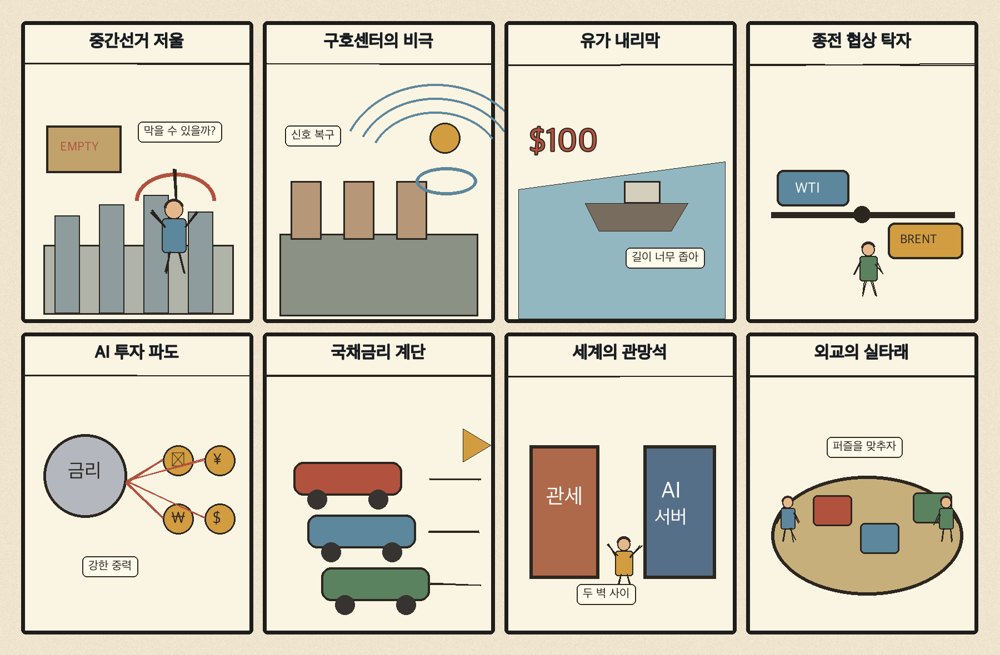
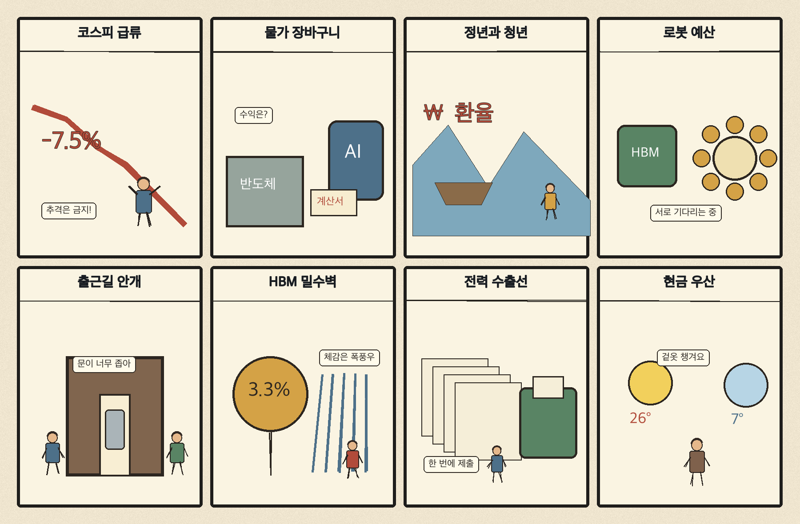

01
앱러빈 · 231.25→245.51달러 · +6.17%
내용요약 시가 대비 +6.17%로 조사군 최상위였습니다.
예상여파 광고기술·AI 소프트웨어의 위험선호 회복을 보여주지만 급등 추격에는 주의가 필요합니다.
MORNING_BRIEFING_20261104
작성 시각: 2026-11-04 06:36 KST · 직전 미국 정규장과 2026-11-04 KST 당일 공개 기사 기준
11월 3일 뉴욕증시는 다우 -0.38%, S&P 500 +0.36%, 나스닥 +0.83%로 혼조 마감했습니다. 반도체·대형 기술주의 저가 매수가 성장주 심리를 되살렸지만 미국 중간선거 결과를 앞둔 관망과 국채금리 상승 부담이 남았습니다. 전일 KOSPI는 -3.59%, KOSDAQ은 -4.08% 급락해 오늘은 반등 폭보다 외국인 수급과 낙폭 회복의 질을 우선 확인해야 합니다.
| 지수 | 종가 | 등락률 | 한국 증시 시사점 |
|---|---|---|---|
| 다우존스 | 51,786.72 | -0.38% | 경기민감주 부담 |
| S&P 500 | 7,568.92 | +0.36% | 성장주 심리 보완 |
| 나스닥 종합 | 25,372.01 | +0.83% | 성장주 심리 보완 |
대형 기술주 저가 매수가 성장주 심리를 보완했습니다.
전일 5,648.79로 밀리며 높은 변동성을 보였습니다.
관세·재정·AI 규제의 의회 동력이 갈릴 수 있습니다.
종전 협상 기대가 브렌트유를 한 달 최저로 눌렀습니다.
11월 3일 보고서는 수급·컨센서스·30건 이상 유사 조건 표본을 모두 확보하지 못해 공식 추천을 내지 않았습니다. 사후에 종목을 추가하지 않습니다.
| 시장 | 종가 | 등락률 | 기준 |
|---|---|---|---|
| KOSPI | 5,648.79 | -3.59% | 11월 3일 · 시가 대비 -1.16% |
| KOSDAQ | 704.39 | -4.08% | 11월 3일 · 시가 대비 -2.70% |
| 다우존스 | 51,786.72 | -0.38% | 미국 11월 3일 정규장 |
| S&P 500 | 7,568.92 | +0.36% | 미국 11월 3일 정규장 |
| 나스닥 종합 | 25,372.01 | +0.83% | 미국 11월 3일 정규장 |
앱러빈 +6.17%, 쇼피파이 +4.50%로 조사군 상위였습니다.
코인베이스 +5.16%, 마이크로스트래티지 +3.13%였습니다.
오라클 +3.43%, 마이크로소프트 +2.35%였습니다.
다이아몬드백 -2.24%, 테슬라 -1.91%, 월마트 -1.44%였습니다.
내용요약 시가 대비 +6.17%로 조사군 최상위였습니다.
예상여파 광고기술·AI 소프트웨어의 위험선호 회복을 보여주지만 급등 추격에는 주의가 필요합니다.
내용요약 시가 대비 +5.16%로 상승했습니다.
예상여파 디지털자산 관련주의 높은 민감도는 위험선호 회복과 변동성 확대를 동시에 시사합니다.
내용요약 시가 대비 +4.50%로 강세였습니다.
예상여파 성장주 매수 유입이 전자상거래 소프트웨어로 확산됐습니다.
내용요약 시가 대비 -2.24%로 조사군 하위였습니다.
예상여파 국제유가 하락 지속이 미국 에너지 생산주의 단기 부담으로 작용했습니다.
내용요약 시가 대비 -1.91%로 하락했습니다.
예상여파 나스닥 반등 속에서도 개별 종목 변동성과 밸류에이션 부담이 남았습니다.
나스닥 +0.83%와 마이크로소프트·오라클 강세는 국내 성장주 심리를 보완할 수 있습니다. 다만 전일 KOSPI -3.59%, KOSDAQ -4.08% 급락 뒤라 기술적 반등만 보고 추격하기보다 외국인 현·선물 수급, 삼성전자·SK하이닉스의 전일 낙폭 회복, 원·달러 환율을 함께 봐야 합니다. 미국 중간선거 개표와 국채금리 상승은 장중 변동성을 키울 변수입니다.
오늘은 추천 없음 — 현금 관망
전일까지의 외국인·기관 수급, 컨센서스 변화와 30건 이상 유사 조건 표본을 함께 확보해 종합점수 75점·상승확률 60%·예상 손익비 1.5를 모두 검증한 종목이 없습니다. 전일 국내 지수 급락과 미국 중간선거 개표도 겹쳤습니다.
관심 연결종목 반도체·로봇·AI 보안은 관찰 대상일 뿐 매수 추천이 아닙니다. 장전 급등과 장 초반 갭 상승 종목은 추격매수를 금지합니다.
상·하원 구도와 관세·AI 정책 변화를 확인합니다.
급락 다음 날 현·선물 동반 매수 복귀 여부를 봅니다.
미국 기술주 반등이 국내 대형주로 이어지는지 점검합니다.
미국 10년물과 원·달러 환율의 동반 상승을 경계합니다.
핵심 요약: 미국 기술주가 반등했지만 AI 산업은 HBM 설계 변화, 수출통제 우회, 피지컬 AI 실증과 보안 규제라는 복합 과제를 마주하고 있습니다. 성장성만큼 공급망·보안·수익성 검증이 중요합니다.
내용요약 미국 기술주에 저가 매수가 유입되며 반도체 업종의 반등 지속력을 점검한 당일 장전 기사입니다.
예상여파 나스닥 반등은 국내 반도체 심리를 받칠 수 있으나 전일 국내 지수 급락 뒤 변동성은 여전히 높습니다.
내용요약 차세대 HBM 제품의 적층 단수가 시장 기대보다 낮아질 수 있다는 당일 보도입니다.
예상여파 설계 변화는 수율과 원가 부담을 낮출 수 있지만 장비·소재별 수요 가정은 다시 점검해야 합니다.
내용요약 미국 수출통제를 우회한 고가 HBM 밀수 시장이 중국에서 형성됐다는 보도입니다.
예상여파 첨단칩 통제가 강화되면 공식 공급망과 고객 심사, 재수출 관리 비용이 커질 수 있습니다.
내용요약 피지컬 AI와 산업용 로봇을 조망하는 2026 로보월드가 개막했다는 당일 기사입니다.
예상여파 제조 자동화와 휴머노이드 실증이 부품·센서·제어 소프트웨어 수요로 이어질지 주목됩니다.
내용요약 금융권 AI 해킹 대응을 위해 실시간 탐지 의무화가 필요하다는 당일 보도입니다.
예상여파 AI 도입 확대와 함께 보안 관제·데이터 보호·사고 대응 투자가 필수 비용으로 자리잡을 수 있습니다.
핵심 요약: 미국 중간선거가 정책 경로를 가르는 가운데 우크라이나 민간 피해와 종전 논의가 동시에 진행되고 있습니다. 미·이란 협상 기대는 유가를 낮췄고, 1조2천억달러 규모 AI 투자의 금융시장 영향도 커지고 있습니다.
내용요약 미국 중간선거 투표가 시작돼 한국시간 오후부터 결과 윤곽이 나올 수 있다는 당일 보도입니다.
예상여파 의회 구도는 관세·재정·AI 규제와 대외정책의 추진력을 바꿔 글로벌 시장 변동성을 키울 수 있습니다.
내용요약 러시아가 우크라이나 구호센터에 대형 폭탄을 투하해 최소 33명이 숨졌다는 당일 보도입니다.
예상여파 민간 피해 확대는 종전 협상 여건을 악화시키고 유럽의 방위·에너지 불확실성을 높일 수 있습니다.
내용요약 미국과 이란의 종전 협상 기대 속 브렌트유가 한 달 만의 최저 수준으로 내렸다는 보도입니다.
예상여파 에너지 수입국의 물가 부담은 낮아질 수 있지만 협상 진행 상황에 따라 유가가 급변할 수 있습니다.
내용요약 우크라이나 종전 논의를 위해 미국·유럽과 회의가 예정됐다는 당일 국제 보도입니다.
예상여파 협상 진전 여부는 유럽 안보와 원자재·곡물 운송비, 위험자산 선호에 영향을 줄 수 있습니다.
내용요약 전 세계 AI 투자가 1조2천억달러 규모로 커지며 성장동력과 금융시장 위험을 동시에 만든다는 분석입니다.
예상여파 투자 회수 속도와 전력·칩 공급 병목이 기술주 밸류에이션과 글로벌 설비투자의 핵심 변수가 됩니다.

핵심 요약: 전일 증시 급락과 2.8% 물가가 금융·생활 부담을 높였습니다. 정년 연장과 청년 일자리, 로봇 산업 예산, 큰 일교차와 안개는 오늘 정책·산업·생활 현장에서 함께 살펴볼 이슈입니다.
내용요약 전일 코스피가 장 초반부터 반도체 대형주 약세로 크게 흔들린 흐름을 다룬 당일 기사입니다.
예상여파 미국 나스닥 반등만으로 추세 전환을 단정하기보다 외국인 수급과 대형 반도체 낙폭 회복을 확인해야 합니다.
내용요약 10월 소비자물가가 2.8% 오르며 기름값과 외식비 부담이 커졌다는 당일 보도입니다.
예상여파 가계 실질소득과 소비 심리에 부담이 되고 금리 인하 기대를 제약할 수 있습니다.
내용요약 정년 연장 논의가 재개됐지만 청년 일자리 영향을 고려해야 한다는 당일 보도입니다.
예상여파 임금체계 개편과 세대 간 고용 보완책이 함께 설계되지 않으면 노동시장 갈등이 커질 수 있습니다.
내용요약 정부가 2027년 로봇 3대 사업에 1,477억원을 투입해 휴머노이드 보급과 부품 국산화를 추진한다는 기사입니다.
예상여파 로봇 실증 확대는 국내 부품·제어·서비스 기업에 기회지만 예산 집행과 현장 수요의 연결이 관건입니다.
내용요약 내륙에 짙은 안개가 끼고 중부권 일교차가 15도 안팎까지 벌어진다는 당일 예보입니다.
예상여파 출근길 가시거리 저하와 큰 일교차에 대비해 교통 안전과 건강 관리가 필요합니다.
